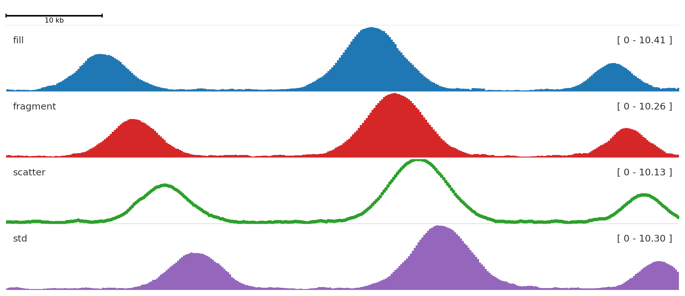
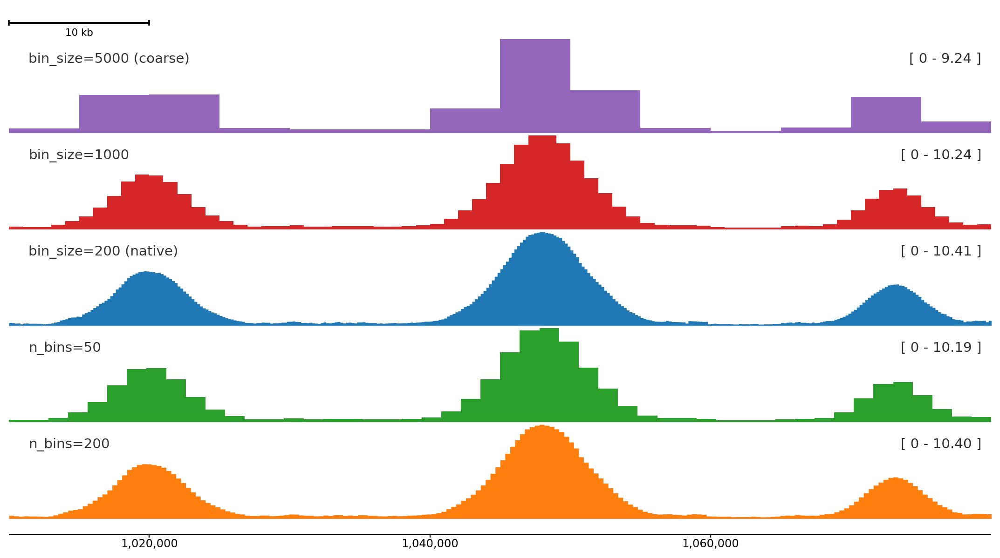
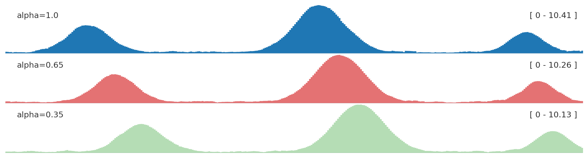
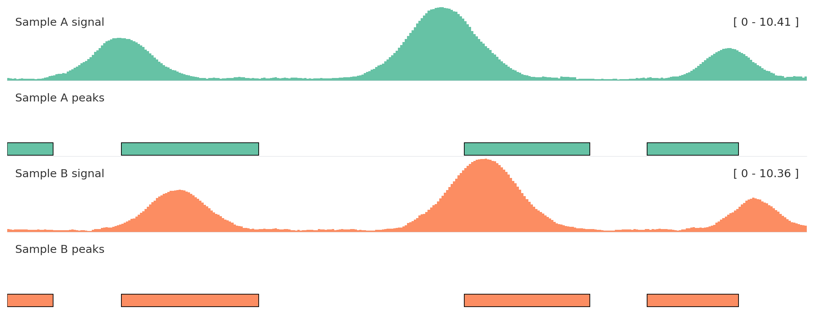
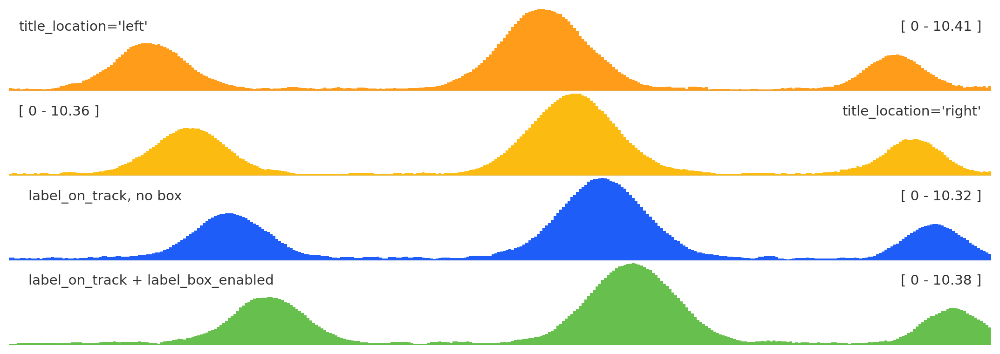
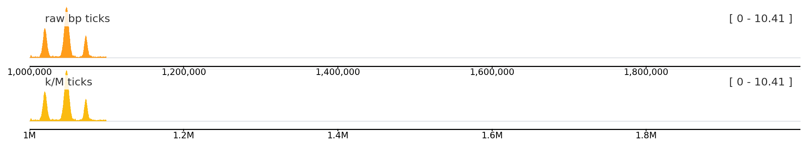

This page focuses on choices you can see: signal styles, color grouping, label placement, and shared scales. For exhaustive runtime fields, use Compact Options.
BigWig styles
style changes how a quantitative signal is drawn.
from plotnado import GenomicFigurefrom plotnado.examples import REGION, signal# signal() returns a synthetic ChIP-seq-like DataFrame(chrom, start, end, value)# In real use pass a BigWig path/URL or any DataFrame with those columns# REGION is a string like "chr1:1,000,000-1,100,000"fig = GenomicFigure(track_height=1.15)fig.scalebar()fig.bigwig(signal(phase=0.0), title="fill", style="fill", color="#1f77b4")fig.bigwig(signal(phase=0.8), title="fragment", style="fragment", color="#d62728")fig.bigwig(signal(phase=1.6), title="scatter", style="scatter", color="#2ca02c", scatter_point_size=10)fig.bigwig(signal(phase=2.4), title="std", style="std", color="#9467bd")fig.plot(REGION)

fill is the default for continuous signal, fragment emphasizes bins, scatter shows individual values, and std draws a band-style summary.
n_bins divides the plotted region into a fixed number of equal bins regardless of the source resolution. bin_size sets the bin width in base pairs instead. Both work with BigWig files and DataFrames; overlapping source intervals are averaged by overlap length.
from plotnado import GenomicFigurefrom plotnado.examples import REGION, signal# signal() returns a synthetic ChIP-seq-like DataFrame(chrom, start, end, value) at 200 bp bins# In real use pass a BigWig path/URL or any DataFrame with those columnsfig = GenomicFigure(track_height=1.15)fig.scalebar()fig.bigwig(signal(), title="bin_size=5000 (coarse)", style="fill", color="#9467bd", bin_size=5000)fig.bigwig(signal(), title="bin_size=1000", style="fill", color="#d62728", bin_size=1000)fig.bigwig(signal(), title="bin_size=200 (native)", style="fill", color="#1f77b4")fig.bigwig(signal(), title="n_bins=50", style="fill", color="#2ca02c", n_bins=50)fig.bigwig(signal(), title="n_bins=200", style="fill", color="#ff7f0e", n_bins=200)fig.axis()fig.plot(REGION)

Coarser binning compresses the signal into broader summaries; finer bins preserve peak shape. The bottom track is the native 200 bp resolution from the synthetic data.
Use n_bins when you want consistent resolution across regions of different sizes:
# Always 200 bins regardless of zoom levelfig.bigwig("signal.bw", n_bins=200)# Fixed bin width across any regionfig.bigwig("signal.bw", bin_size=500)
Color and alpha
from plotnado import GenomicFigurefrom plotnado.examples import REGION, signal# signal() → DataFrame(chrom, start, end, value) — replace with a BigWig path/URL or DataFramefig = GenomicFigure(track_height=1.0)fig.bigwig(signal(), title="alpha=1.0", style="fill", color="#1f77b4", alpha=1.0)fig.bigwig(signal(phase=0.8), title="alpha=0.65", style="fill", color="#d62728", alpha=0.65)fig.bigwig(signal(phase=1.6), title="alpha=0.35", style="fill", color="#2ca02c", alpha=0.35)fig.plot(REGION)

Use opacity to reduce visual dominance when several panels are compared.
Autocolor and groups
Use autocolor() once, then assign related tracks the same color_group.
from plotnado import GenomicFigurefrom plotnado.examples import REGION, intervals, signal# signal() → DataFrame(chrom, start, end, value) — replace with a BigWig path/URL or DataFrame# intervals() → DataFrame(chrom, start, end, name) — replace with a BED/BigBed path, URL, or DataFramefig = GenomicFigure(track_height=1.1).autocolor("Set2")fig.bigwig(signal(phase=0.0), title="Sample A signal", color_group="A")fig.bed(intervals(), title="Sample A peaks", color_group="A", display="expanded")fig.bigwig(signal(phase=1.2), title="Sample B signal", color_group="B")fig.bed(intervals().assign(name=["b1", "b2", "b3", "b4"]), title="Sample B peaks", color_group="B", display="expanded")fig.plot(REGION)

Color groups keep semantically related tracks aligned without hard-coding every color.
Label placement
from plotnado import GenomicFigurefrom plotnado.examples import REGION, signal# signal() → DataFrame(chrom, start, end, value) — replace with a BigWig path/URL or DataFramefig = GenomicFigure(track_height=1.0)fig.bigwig(signal(), title="title_location='left'", title_location="left")fig.bigwig(signal(phase=0.7), title="title_location='right'", title_location="right")fig.bigwig(signal(phase=1.4), title="label_on_track, no box", label_on_track=True, label_box_enabled=False)fig.bigwig(signal(phase=2.1), title="label_on_track + label_box_enabled", label_on_track=True, label_box_enabled=True)fig.plot(REGION)

title_location anchors the label left or right; label_box_enabled adds a legibility box; label_on_track with the box is useful for compact multi-track figures.
Built-in themes include "default", "minimal", and "publication".
Signal smoothing
smoothing_window applies a rolling window over the binned signal before rendering. smoothing_method selects "mean" (default) or "median". Set smoothing_center=True (default) to center the window so peaks stay aligned with their genomic position. With a large median window, broad peaks can develop flat tops because many adjacent bins share the same median; that shape is expected and is not y-axis clipping.
A window of 50 bins visibly smooths noisy signal while preserving peak position; median smoothing is more robust to spikes, and with a large window it can produce flat-topped peaks by design.
Threshold and coordinate markers
hline draws a horizontal line at a fixed y-value — useful for significance thresholds or baseline references. vline draws a vertical line at a fixed genomic coordinate. Both are zero-height overlay tracks so they do not consume panel space.
Italic (default) distinguishes gene names from surrounding annotation text; normal and oblique are alternatives.
Axis human-readable labels
Set use_human_readable_labels=True to display tick labels with k / M / G suffixes instead of raw base-pair numbers. Useful for large regions where raw numbers become hard to read.
from plotnado import GenomicFigurefrom plotnado.examples import signalLONG_REGION ="chr1:1,000,000-2,000,000"fig = GenomicFigure(track_height=0.8)fig.bigwig(signal(), title="raw bp ticks")fig.axis(use_human_readable_labels=False)fig.bigwig(signal(), title="k/M ticks")fig.axis(use_human_readable_labels=True)fig.plot(LONG_REGION)

Human-readable labels (bottom) keep the axis uncluttered over large regions.